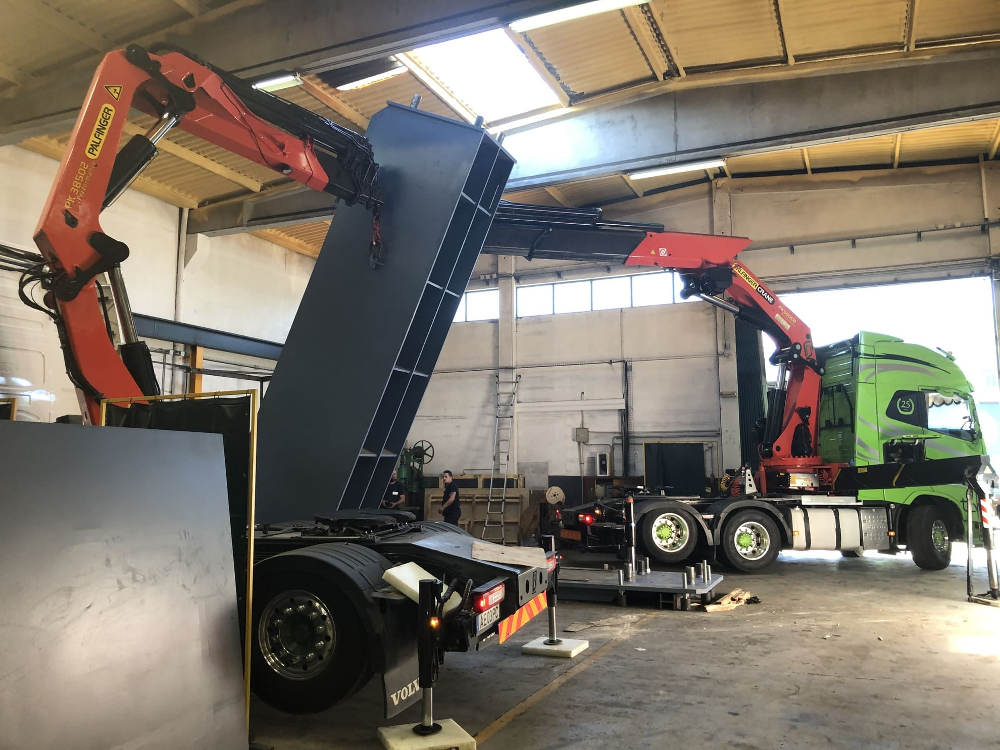
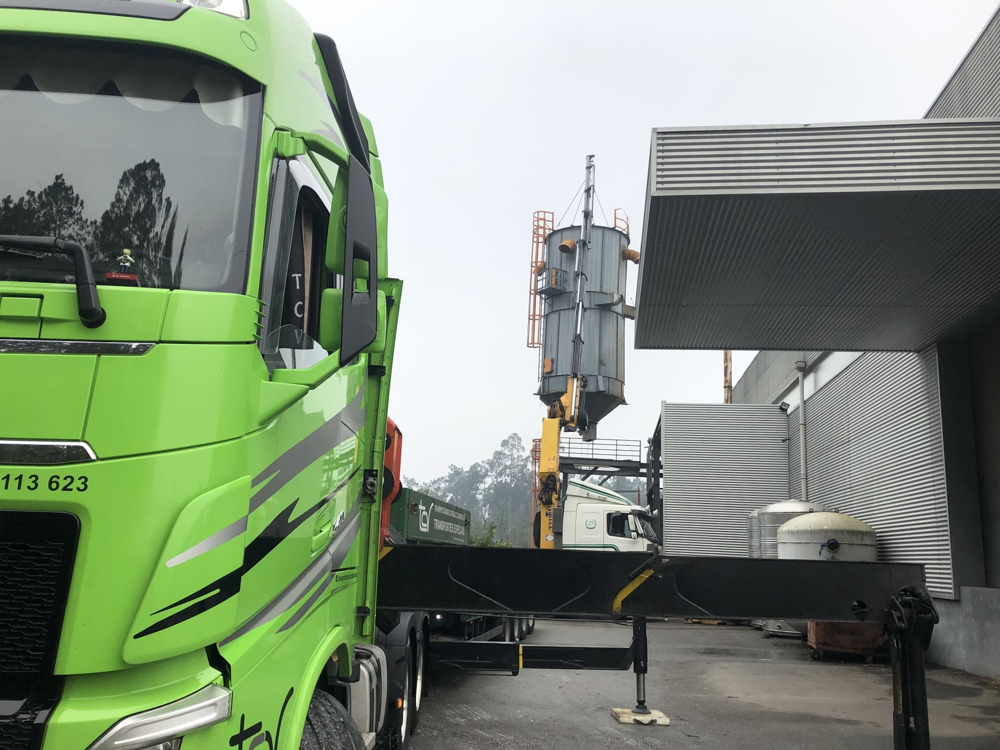
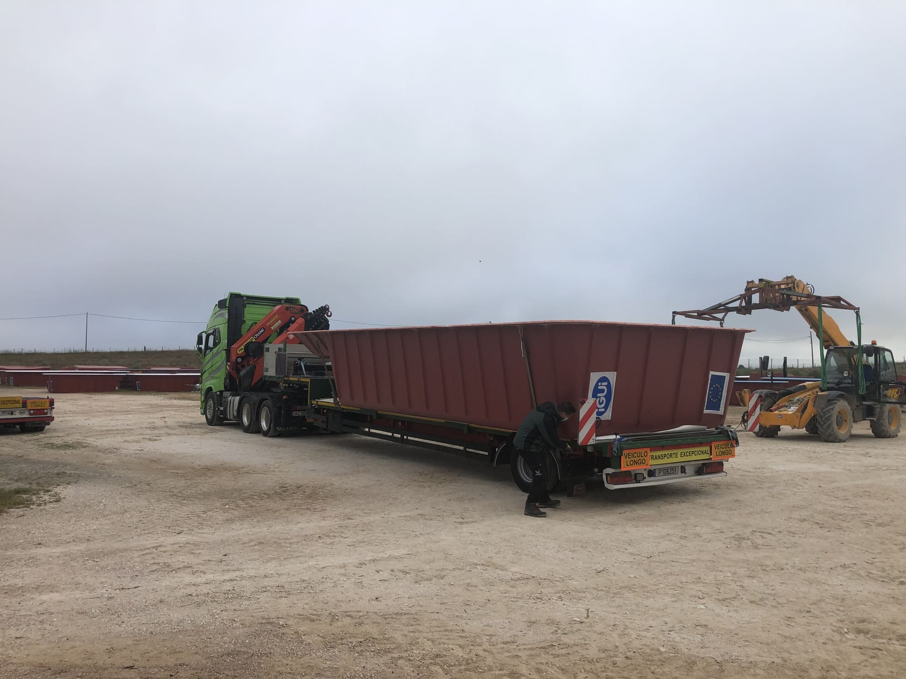

Camiões com grua
Transportar e movimentar equipamentos no mesmo serviço.
Explore os serviços ou escolha uma necessidade para preparar a conversa com a equipa.
Orientação inicial. A adequação do veículo e as condições da operação são sempre confirmadas pela TC Valongo.
Para transportar e movimentar equipamentos.
Antes de contactar, reúna:Transporte e movimentação, com análise de cada necessidade.
Transportar e movimentar equipamentos no mesmo serviço.
Transporte de máquinas e transportes especiais.
Apoio à carga e descarga de mercadoria paletizada.
Transporte de mercadorias em território nacional e internacional.
Uma opção para o transporte de cargas de menor dimensão.
Outras necessidades de transporte a analisar com a equipa.
Fotografias das galerias oficiais de gruas e porta-máquinas. Datas e locais não indicados.


